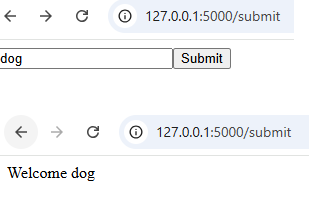
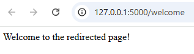

Flask is a lightweight Python web framework that makes it easy to build powerful web applications.
With its simple syntax and flexible design, Flask is perfect for beginners and pros alike. Learn to create dynamic websites, connect databases, and deploy your own web apps with ease.
Lets start with a very simple flask app
First we need to import the Flask class from flask: from flask import Flask
Then, we will initiate it: app = Flask(__name__)
Now we want to define something called a route, which is just the endpoint that someone can go to in a browser - @app.route('/')
At last, we will define the index function.
from flask import Flask app = Flask(__name__) @app.route('/') def index(): return "<h1>Hello</h1>"
When you return a string from a route, it returns HTML. So we can use HTML tags (we used <h1>)
A route is a way to map a URL to a specific Python function. It’s how your app knows what to do when someone visits a certain page.
from flask import Flask app = Flask(__name__) @app.route('/') def home(): return "Welcome to the homepage!"
Here, visiting / will trigger the home() function and return the message.
🔀 Dynamic Routes
routes with variables:
@app.route('/user/<username>') def reet_user(username): return f"Hello, {username}!"
🧠 Key Concepts
@app.route() is a decorator that binds a URL to a function.
You can use
Flask supports type converters like
The request method refers to the HTTP method used by the client (like a browser or app) to communicate with the server.
So typically when you go navigate around a website or a web app in the browser, your browser is sending something called a Get request to the particular endpoint, right?
If you do /home it's sending a Get request to the /home endpoint.
So by default in flask, when you define your routes, you are defining a route that works with get requests and get requests only. But there are other methods that you can use.
🚦 Common HTTP Methods in Flask
| Method | Purpose | Example Use Case |
|---|---|---|
GET |
Retrieve data |
Viewing a webpage or search query |
POST |
Submit data to the server |
Login form or registration |
PUT |
Update existing data |
Editing a profile |
DELETE |
Remove data |
Deleting a user account |
You can check which method was used like this:
from flask import Flask, request
app = Flask(__name__)
@app.route('/submit', methods=['GET', 'POST'])
def submit():
if request.method == 'POST':
return "Data submitted!"
else:
return "Send me some data!"
Form data is accessed using the request.form object, which holds key-value pairs submitted via an HTML form using the POST method.
from flask import Flask, request
app = Flask(__name__)
@app.route('/submit', methods=['GET', 'POST'])
def submit():
if request.method == 'POST':
username = request.form.get('user_input')
return f"Welcome {username}"
return '<form method="POST"><input type="text" name="user_input"/><input type="submit"></form>'
if __name__ == '__main__':
app.run(debug=True)

🔍 Key Notes
It won't go to if condition as by default the method is GET but after hitting the submit button, it will go to if condition.
request.form is a dictionary-like object containing form fields.
Use .get('fieldname') to safely retrieve values.
Works only with POST requests
redirects are super handy for sending users to a different URL—whether it's after a form submission, login, or just rerouting traffic. Here's how to use them:
from flask import Flask, redirect
app = Flask(__name__)
@app.route('/')
def home():
return redirect('/welcome') # Redirects to /welcome
@app.route('/welcome')
def welcome():
return 'Welcome to the redirected page!'

It will take you directly to /welcome page.
🔗 Redirect with url_for()
This is cleaner and more flexible—especially if you change route names later.
from flask import Flask, redirect, url_for
app = Flask(__name__)
@app.route('/login', methods=['GET','POST'])
def login():
# Imagine login logic here
return redirect(url_for('dashboard'))
@app.route('/dashboard')
def dashboard():
return 'Logged in successfully!'
if __name__ == '__main__':
app.run(debug=True)